node specs/download-spec.mjs. Spec indexTrueType provides instructions for each of the following tasks and a set of general-purpose instructions. This chapter describes the TrueType instruction set. Instruction descriptions are organized by category based on their function.
TrueType instructions are uniquely specified by their opcodes. For convenience, this book will refer to instructions by their names. Each instruction name is a mnemonic intended to aid in remembering that instruction’s function. For example, the MDAP instruction stands for Move Direct Absolute Point. Similarly, RUTG is short for Round Up To Grid. A brief description of each instruction clarifying the mnemonic marks the start of a new instruction.
One name may actually refer to several different but closely related instructions. A bracketed list of Boolean values follows each name to uniquely specify a particular variant of a given instruction. The Boolean list can be converted to a binary number and that number added to the base opcode for the instruction to obtain the opcode for any instruction variant.
To obtain the opcode for any instruction, take the lower of the two opcode values given in the code range and add the unsigned binary number represented by the list of binary digits. The left most bit is the most significant. For example, given an instruction with the opcode range 0xCO–0xDF and five Boolean flags (a through e) the opcode for a given instruction base can be computed as shown:
Opcode = 0xC0 + a · 24 + b · 23 + c · 22 + d · 21 + e · 20
If these flags were set to 11101 the code would be computed as follows:
0xC0 + 1 · 24 + 1 · 23 + 1 · 22 + 0 · 21 + 1 · 20
Instruction opcodes are part of the instruction stream, a sequence of opcodes and data. The instruction stream is not a stack. While the stream of opcodes and data on the instruction stream is gradually used up, no new data is added to the instruction stream by the execution of another instruction (i.e. there is no equivalent of a push instruction that adds data to the instruction stream). It is possible to alter the flow of control through the instruction stream using one of the jump instructions described in a later section.
The instruction stream is shown as a sequence of opcodes and data. Since the instruction stream is 1-byte wide, words will be broken up into high bytes and low bytes with high bytes appearing first in the stream. For added readability, instruction names are used in illustrations instead of opcodes. An arrow will point to the next instruction awaiting execution.
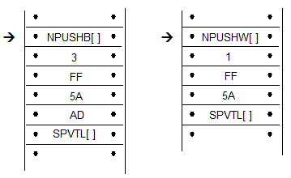
A few instructions known collectively as push instructions move data from the instruction stream to the interpreter stack. These instructions are unique in taking their arguments from the instruction stream. All other TrueType instructions take any data needed from the stack at the time they are executed. Any results produced by a TrueType instruction are pushed onto the interpreter stack.
An instruction that expects two arguments and pushes a third would expect the two arguments to be at the top of the stack. Any result pushed by that instruction appears at the top of the stack.
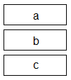
To easily remember the order in which stack values are handled during arithmetic or logical operations, imagine writing the stack values from left to right, starting with the bottom value. Then insert the operator between the two furthest right elements. For example, subtract a,b would be interpreted as (b-a):
c b - a
GT a,b would be interpreted as (b>a):
c b > a
The statement push d, e means push d then push e adding two elements to the stack as shown.
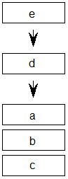
To indicate that the top two stack elements are to be removed the statement would be pop e, d.
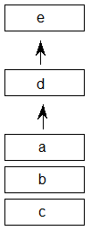
It has already been noted that the bracketed list of binary digits that follows the instruction name uniquely identifies an instruction variant. This is done by having the bits represent a list of Boolean flags that can be set to TRUE with a value of 1 or to FALSE with a value of 0. Binary digits that follow the name can also be grouped to form a larger binary number. In such cases, the documentation specifies the meaning associated with each possible numerical combination.
An instruction specification consists of the instruction name followed by its bracketed Boolean flags. Additional information describing the flags and explaining the stack interaction and any Graphics State dependencies is provided in tabular form:
| Code Range | the range of hexadecimal codes identifying this instruction and its variants |
|---|---|
| Flags | an explanation of the meaning of a bracketed binary number |
| From IS | any arguments taken from the instruction stream by push instructions |
| Pops | any arguments popped from the stack |
| Pushes | any arguments pushed onto the stack |
| Uses | any state variables whose value this instruction depends upon |
| Sets | any state variables set by this instruction |
Instruction descriptions include illustrations intended to clarify stack interactions, Graphics State effects, and changes to interpreter tables.
In the case of instructions that move points, an illustration will be provided to clarify the direction and magnitude of the movement. In these illustrations, shades of gray will be used to indicate the sequence in which points have been moved. The darker the fill, the more recently a point has been moved.
Instruction opcodes are always bytes. Values in the instruction stream are bytes.
Values pushed onto the stack or popped from the stack are always 32-bit quantities (int32 or uint32). When values that are less than 32 bits are pushed onto the stack, bytes are expanded to 32-bit quantities by padding the upper bits with zeroes and words are sign extended to 32 bits. In cases where two instruction stream bytes are combined to form a word, the high order bits appear first in the instruction stream.
Note: On a 16-bit system, such as Windows, all stack operations are on 16-bit values (int16 or uint16). Care must be taken to avoid overflow. It is also important to note that F26dot6 values (used for internal scalar math) are represented instead as 10 dot 6 values (i.e. the upper 16 bits are not supported).
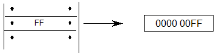
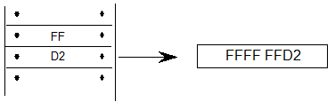
All values on the stack are signed. Instructions, however, interpret these 32-bit quantities in a variety of ways. The interpreter variously understands quantities as integers and as fixed-point numbers.
Values such as pixel coordinates are represented as 32-bit quantities consisting of 26 bits of whole number and 6 bits of fraction. These are fixed point numbers with the data type name F26Dot6.
The freedom_vector and projection_vector are represented as 2.14 fixed point numbers. The upper 16 bits of the 32-bit quantity are ignored.
A given set of 32 bits will have a different value depending upon how it is interpreted. The following 32-bit value interpreted as an integer has the value 264.
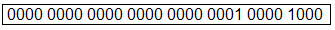
The same 32 bit quantity interpreted as an F26Dot6 fixed point number has the value 4.125.
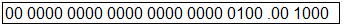
The figure below gives several examples of expressing pixel values as 26.6 words.
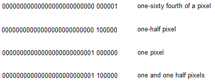
Most TrueType instructions take their arguments from the interpreter stack. A few instructions, however, take their arguments from the instruction stream. Their purpose is to move data from the instruction stream to the interpreter stack. Collectively these instructions are known as the push instructions.
| NPUSHB[ ] | |
|---|---|
| Code Range | 0x40 |
| From IS | n: number of bytes to push (1 byte interpreted as an integer) b1, b2,...bn: sequence of n bytes |
| Pushes | b1, b2, bn: sequence of n bytes each padded to 32 bits (uint32) |
Takes n unsigned bytes from the instruction stream, where n is an unsigned integer in the range (0..255), and pushes them onto the stack. n itself is not pushed onto the stack.
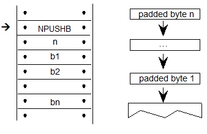
| NPUSHW[ ] | |
|---|---|
| Code Range | 0x41 |
| From IS | n: number of words to push (one byte interpreted as an integer) w1, w2,...wn: sequence of n words formed from pairs of bytes, the high byte appearing first |
| Pushes | w1, w2,...wn: sequence of n words each sign extended to 32 bits (int32) |
Takes n 16-bit signed words from the instruction stream, where n is an unsigned integer in the range (0..255), and pushes them onto the stack. n itself is not pushed onto the stack.
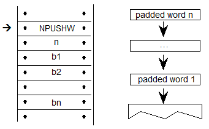
| PUSHB[abc] | |
|---|---|
| Code Range | 0xB0 – 0xB7 |
| abc | number of bytes to be pushed - 1 |
| From IS | b0, b1,..bn: sequence of n + 1 bytes |
| Pushes | b0, b1, ...,bn: sequence of n + 1 bytes each padded to 32 bits (uint32) |
Takes the specified number of bytes from the instruction stream and pushes them onto the interpreter stack.
The variables a, b, and c are binary digits representing numbers from 000 to 111 (0-7 in binary). Because the actual number of bytes (n) is from 1 to 8, 1 is automatically added to the ABC figure to obtain the actual number of bytes pushed.
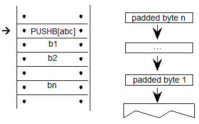
Example:
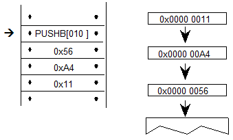
| PUSHW[abc] | |
|---|---|
| Code Range | 0xB8 - 0xBF |
| abc | number of words to be pushed - 1. |
| From IS | w0,w1,..wn: sequence of n+1 words formed from pairs of bytes, the high byte appearing first |
| Pushes | w0, w1,...wn: sequence of n+1 words each sign extended to 32 bits (int32) |
Takes the specified number of words from the instruction stream and pushes them onto the interpreter stack.
The variables a, b, and c are binary digits representing numbers from 000 to 111 (0-7 binary). Because the actual number of bytes (n) is from 1 to 8, 1 is automatically added to the abc figure to obtain the actual number of bytes pushed.
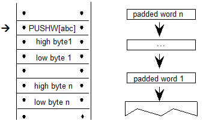
Example:
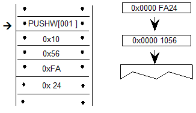
The interpreter Storage Area is a block of memory that can be used to store and later access 32-bit values. Instructions exist for writing values to the Storage Area and retrieving values from the Storage Area. Attempting to read a value from a storage location that has not previously had a value written to it will yield unpredictable results.
| RS[ ] | |
|---|---|
| Code Range | 0x43 |
| Pops | location: Storage Area location (uint32) |
| Pushes | value: Storage Area value (uint32) |
| Gets | Storage Area value |
This instruction reads a 32-bit value from the Storage Area location popped from the stack and pushes the value read onto the stack. It pops an address from the stack and pushes the value found in that Storage Area location to the top of the stack. The number of available storage locations is specified in the maxProfile table in the font file.
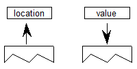
Example:
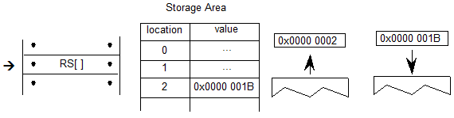
| WS[ ] | |
|---|---|
| Code Range | 0x42 |
| Pops | value: Storage Area value (uint32) |
| location: Storage Area location (uint32) | |
| Pushes | – |
| Gets | Storage Area value |
This instruction writes a 32-bit value into the storage location indexed by locations. It works by popping a value and then a location from the stack. The value is placed in the Storage Area location specified by that address. The number of storage locations is specified in the maxProfile table in the font file.
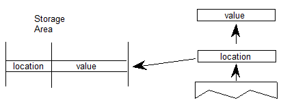
Example:
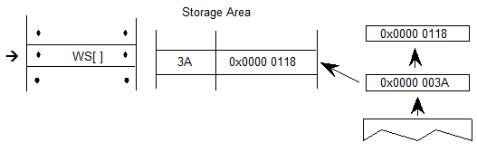
The Control Value Table stores information that is accessed by the indirect instructions. Values can be written to the CVT in font design units or pixel units as proves convenient. Values read from the CVT are always in pixels (F26Dot6). This table, unlike the Storage Area, is initialized by the font and is automatically scaled.
| WCVTP[ ] | |
|---|---|
| Code Range | 0x44 |
| Pops | value: number in pixels (F26Dot6 fixed point number) |
| location: Control Value Table location (uint32) | |
| Pushes | – |
| Sets | Control Value Table entry |
Pops a location and a value from the stack and puts that value in the specified location in the Control Value Table. This instruction assumes the value is in pixels and not in font design units.
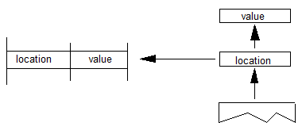
| WCVTF[ ] | |
|---|---|
| Code Range | 0x70 |
| Pops | value: number in font design units (uint32) |
| location: Control Value Table location (uint32) | |
| Pushes | – |
| Sets | Control Value Table entry |
Pops a location and a value from the stack and puts the specified value in the specified address in the Control Value Table. This instruction assumes the value is expressed in font design units and not pixels. The value is scaled before being written to the table.
| RCVT[ ] | |
|---|---|
| Code Range | 0x45 |
| Pops | location: CVT entry number (uint32) |
| Pushes | value: CVT value (F26Dot6) |
| Gets | Control Value Table entry |
Pops a location from the stack and pushes the value in the location specified in the Control Value Table onto the stack.
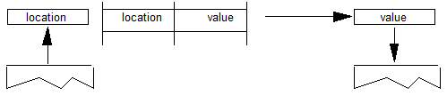
Instructions can be used to set the value of Graphics State variables and, in some cases, to retrieve their current value.
Instructions that retrieve the value of a state variable have names that begin with the word get. Get instructions will return the value of the state variable in question by placing that value on the top of the stack.
The illustration shows the effect of a GPV or get projection_vector instruction. It takes the x and y components of the projection_vector from the Graphics State and places them on the stack.
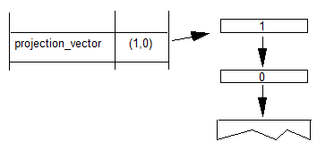
Instructions that change the value of a Graphics State variable have a name that begins with the word set. Set instructions expect their arguments to be at the top of the interpreter stack
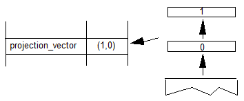
In addition to simple sets and gets, some instructions exist to simplify management of the values of state variables. For example, a number of instructions exist to set the direction of the freedom_vector and the projection_vector. In setting a vector, it is possible to set it to either of the coordinate axes, to the direction specified by a line, or to a direction specified by values taken from the stack. An instruction exists that directly sets the freedom_vector to the same value as the projection_vector.
| SVTCA[a] | |
|---|---|
| Code Range | 0x00 - 0x01 |
| a | 0: set vectors to the y-axis |
| 1: set vectors to the x-axis | |
| Pops | - |
| Pushes | - |
| Sets | projection_vector |
| freedom_vector |
Sets both the projection_vector and freedom_vector to the same one of the coordinate axes.
The SVTCA is a shortcut for using both the SFVTCA and SPVTCA instructions. SVTCA[1] is equivalent to SFVTCA[1] followed by SPVTCA[1]. This instruction ensures that both movement and measurement are along the same coordinate axis.
Example:
SVTCA[1]
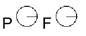
SVTCA[0]
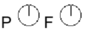
| SPVTCA[a] | |
|---|---|
| Code Range | 0x02 - 0x03 |
| a | 0: set the projection_vector to the y-axis |
| 1: set the projection_vector to the x-axis | |
| Pops | - |
| Pushes | - |
| Sets | projection_vector |
Sets the projection_vector to one of the coordinate axes depending on the value of the flag a.
Example:
SPVTCA[0]
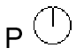
| SFVTCA[a] | |
|---|---|
| Code Range | 0x04 - 0x05 |
| a | 0: set the freedom_vector to the y-axis |
| 1: set the freedom_vector to the x-axis | |
| Pops | - |
| Pushes | - |
| Sets | freedom_vector |
Sets the freedom_vector to one of the coordinate axes depending upon the value of the flag a.
Example:
SFVTCA[0]
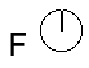
| SPVTL[a] | |
|---|---|
| Code Range | 0x06 - 0x07 |
| a | 0: sets projection_vector to be parallel to line segment from p1 to p2 |
| 1: sets projection_vector to be perpendicular to line segment from p1 to p2; the vector is rotated counter-clockwise 90 degrees | |
| Pops | p1: point number (uint32) |
| p2: point number (uint32) | |
| Pushes | - |
| Uses | point p1 in the zone pointed at by zp2 |
| point p2 in the zone pointed at by zp1 | |
| Sets | projection_vector |
Sets the projection_vector to a unit vector parallel or perpendicular to the line segment from point p1 to point p2.
Example:
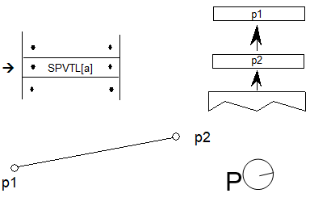
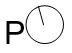
Case 1:
SPVTL[1]
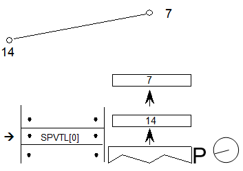
Case 2:
SPVTL[1]
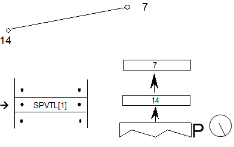
Case 3:
SPVTL[1]
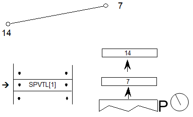
| SFVTL[a] | |
|---|---|
| Code Range | 0x08 - 0x09 |
| a | 0: set freedom_vector to be parallel to the line segment defined by points p1 and p2 |
| 1: set freedom_vector perpendicular to the line segment defined by points p1 and p2; the vector is rotated counter-clockwise 90 degrees | |
| Pops | p1: point number (uint32) |
| p2: point number (uint32) | |
| Pushes | - |
| Sets | freedom_vector |
| Uses | point p1 in the zone pointed at by zp2 |
| point p2 in the zone pointed at by zp1 |
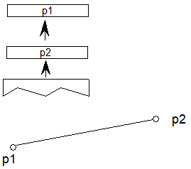
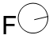
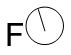
| SFVTPV[ ] | |
|---|---|
| Code | 0x0E |
| Pops | - |
| Pushes | - |
| Sets | freedom_vector |
Sets the freedom_vector to be the same as the projection_vector.
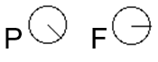
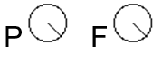
| SDPVTL[a] | |
|---|---|
| Code Range | 0x86 - 0x87 |
| a | 0: Vectors are parallel to line |
| 1: Vectors are perpendicular to line | |
| Pops | p1: first point number (uint32) |
| p2: second point number (uint32) | |
| Pushes | - |
| Sets | dual_projection_vector and projection_vector |
| Uses | point p1 in the zone pointed at by zp2 |
| point p2 in the zone pointed at by zp1 |
Pops two point numbers from the stack and uses them to specify a line that defines a second, dual_projection_vector. This dual_projection_vector uses coordinates from the scaled outline before any grid-fitting took place. It is used only with the IP, GC, MD, MDRP and MIRP instructions. Those instructions will use the dual_projection_vector when they measure distances between ungrid-fitted points. The dual_projection_vector will disappear when any other instruction that sets the projection_vector is used.
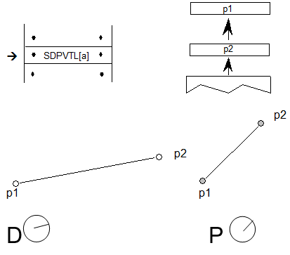
| SPVFS[ ] | |
|---|---|
| Code Range | 0x0A |
| Pops | y: y component of projection_vector (2.14 fixed point number padded with zeroes) |
| x: x component of projection_vector (2.14 fixed point number padded with zeroes) | |
| Pushes | - |
| Sets | projection_vector |
Sets the direction of the projection_vector, using values x and y taken from the stack, so that its projections onto the x and y-axes are x and y, which are specified as signed (two’s complement) fixed-point (2.14) numbers. The square root of (x2 + y2) must be equal to 0x4000 (hex).
If values are to be saved and used by a glyph program, font program or preprogram across different resolutions, extreme care must be used. The values taken from or put on the stack are 2.14 fixed-point values for the x and y components of the vector in question. The values are based on the normalized vector lengths. More simply, the values must always be set such that (X**2 + Y**2) is 1.
If a TrueType program uses specific values for X and Y to set the vectors to certain angles, these values will not produce identical results across different aspect ratios. Values that work correctly at 1:1 aspect ratios (such as VGA and 8514) will not necessarily yield the desired results at a ratio of 1.33:1 (e.g. the EGA).
By the same token, if a TrueType program is making use of the values returned by GPV and GFV, the values returned for a specific angle will vary with the aspect ratio in use at the time.
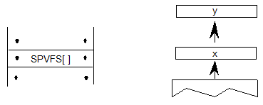
Example:
SPVFS[ ]
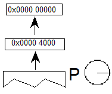
| SFVFS[ ] | |
|---|---|
| Code | 0x0B |
| Pops | y: y component of freedom_vector (2.14 fixed point number padded with zeroes) |
| x: x component of freedom_vector (2.14 fixed point number padded with zeroes) | |
| Pushes | - |
| Sets | freedom_vector |
Sets the direction of the freedom_vector using the values x and y taken from the stack. The vector is set so that its projections onto the x and y -axes are x and y, which are specified as signed (two’s complement) fixed-point (2.14) numbers. The square root of (x2 + y2) must be equal to 0x4000 (hex).
If values are to be saved and used by a glyph program, font program or preprogram across different resolutions, extreme care must be used. The values taken from or put on the stack are 2.14 fixed-point values for the x and y components of the vector in question. The values are based on the normalized vector lengths. More simply, the values must always be set such that (X**2 + Y**2) is 1.
If a TrueType program uses specific values for X and Y to set the vectors to certain angles, these values will not produce identical results across different aspect ratios. Values that work correctly at 1:1 aspect ratios (such as VGA and 8514) will not necessarily yield the desired results at a ratio of 1.33:1 (e.g. the EGA).
By the same token, if a TrueType program is making use of the values returned by GPV and GFV, the values returned for a specific angle will vary with the aspect ratio in use at the time.
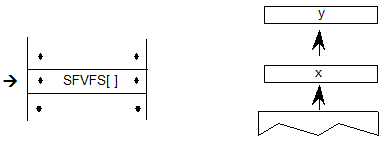
Example:
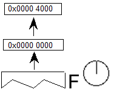
| GPV[ ] | |
|---|---|
| Code Range | 0x0C |
| Pops | - |
| Pushes | x: x component of projection_vector (2.14 fixed point number padded with zeroes) |
| y : y component of projection_vector (2.14 fixed point number padded with zeroes) | |
| Gets | projection_vector |
Pushes the x and y components of the projection_vector onto the stack as two 2.14 numbers.
If values are to be saved and used by a glyph program, font program or preprogram across different resolutions, extreme care must be used. The values taken from or put on the stack are 2.14 fixed-point values for the x and y components of the vector in question. The values are based on the normalized vector lengths. More simply, the values must always be set such that (X**2 + Y**2) is 1.
If a TrueType program uses specific values for X and Y to set the vectors to certain angles, these values will not produce identical results across different aspect ratios. Values that work correctly at 1:1 aspect ratios (such as VGA and 8514) will not necessarily yield the desired results at a ratio of 1.33:1 (e.g. the EGA).
By the same token, if a TrueType program is making use of the values returned by GPV and GFV, the values returned for a specific angle will vary with the aspect ratio in use at the time.
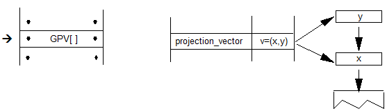
Example:
Case 1:
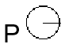
Case 2:
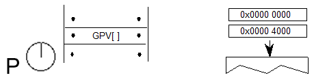
Case 3:
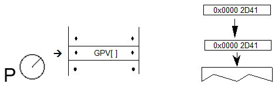
| GFV[ ] | |
|---|---|
| Code Range | 0x0D |
| Pops | - |
| Pushes | x: x-component of freedom_vector (2.14 number padded with zeroes) |
| y: y component of freedom_vector (2.14 number padded with zeroes) | |
| Gets | freedom_vector |
Puts the x and y components of the freedom_vector on the stack. The freedom_vector is put onto the stack as two 2.14 coordinates.
If values are to be saved and used by a glyph program, font program or preprogram across different resolutions, extreme care must be used. The values taken from or put on the stack are 2.14 fixed-point values for the x and y components of the vector in question. The values are based on the normalized vector lengths. More simply, the values must always be set such that (X**2 + Y**2) is 1.
If a TrueType program uses specific values for X and Y to set the vectors to certain angles, these values will not produce identical results across different aspect ratios. Values that work correctly at 1:1 aspect ratios (such as VGA and 8514) will not necessarily yield the desired results at a ratio of 1.33:1 (e.g. the EGA).
By the same token, if a TrueType program is making use of the values returned by GPV and GFV, the values returned for a specific angle will vary with the aspect ratio in use at the time.
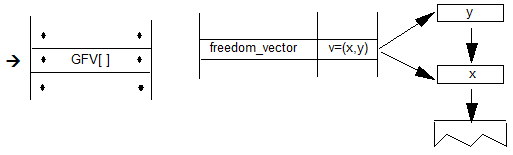
Example:
GFV[ ]
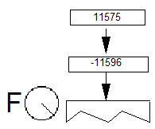
| SRP0[ ] | |
|---|---|
| Code Range | 0x10 |
| Pops | p: point number (uint32) |
| Pushes | - |
| Sets | rp0 |
| Affects | IP, MDAP, MIAP, MIRP, MSIRP, SHC, SHE, SHP |
Pops a point number from the stack and sets rp0 to that point number.
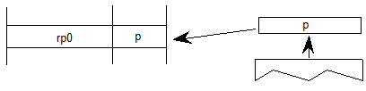
| SRP1[ ] | |
|---|---|
| Code Range | 0x11 |
| Pops | p: point number (uint32) |
| Pushes | - |
| Sets | rp1 |
| Affects | IP, MDAP, MDRP, MIAP, MSIRP, SHC, SHE, SHP |
Pops a point number from the stack and sets rp1 to that point number.
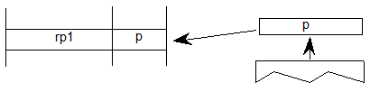
| SRP2[ ] | |
|---|---|
| Code Range | 0x12 |
| Pops | p: point number (uint32) |
| Pushes | - |
| Sets | rp2 |
Pops a point number from the stack and sets rp2 to that point number.
| SZP0[ ] | |
|---|---|
| Code Range | 0x13 |
| Pops | n: zone number (uint32) |
| Pushes | - |
| Sets | zp0 |
| Affects | ALIGNPTS, ALIGNRP, DELTAP1, DELTAP2, DELTAP3, IP, ISECT, MD, MDAP, MIAP, MIRP, MSIRP, SHC, SHE, SHP, UTP |
Pops a zone number, n, from the stack and sets zp0 to the zone with that number. If n is 0, zp0 points to zone 0. If n is 1, zp0 points to zone 1. Any other value for n is an error.
Example:
| SZP1[ ] | |
|---|---|
| Code Range | 0x14 |
| Pops | n: zone number (uint32) |
| Pushes | - |
| Sets | zp1 |
| Affects | ALIGNRPTS, ALIGNRP, IP, MD, MDRP, MSIRP, SHC, SHE, SHP, SFVTL, SPVTL |
Pops a zone number, n, from the stack and sets zp1 to the zone with that number. If n is 0, zp1 points to zone 0. If n is 1, zp1 points to zone 1. Any other value for n is an error.
Example:
| SZP2[ ] | |
|---|---|
| Code Range | 0x15 |
| Pops | n: zone number (uint32) |
| Pushes | - |
| Sets | zp2 |
| Affects | ISECT, IUP, GC, SHC, SHP, SFVTL, SHPIX, SPVTL, SC |
Pops a zone number, n, from the stack and sets zp2 to the zone with that number. If n is 0, zp2 points to zone 0. If n is 1, zp2 points to zone 1. Any other value for n is an error.
| SZPS[ ] | |
|---|---|
| Code Range | 0x16 |
| Pops | n: zone number (uint32) |
| Pushes | - |
| Sets | zp0, zp1, zp2 |
| Affects | ALIGNPTS, ALIGNRP, DELTAP1, DELTAP2, DELTAP3, GC, IP, ISECT, IUP, MD, MDAP, MDRP, MIAP, MIRP, MSIRP, SC, SFVTL, SHPIX, SPVTL, SHC, SHE, SHP, SPVTL, UTP |
Pops a zone number from the stack and sets all of the zone pointers to point to the zone with that number. If n is 0, all three zone pointers will point to zone 0. If n is 1, all three zone pointers will point to zone 1. Any other value for n is an error.
| RTHG[ ] | |
|---|---|
| Code Range | 0x19 |
| Pops | - |
| Pushes | - |
| Sets | round_state |
| Affects | MDAP, MDRP, MIAP, MIRP, ROUND |
| Uses | freedom_vector, projection_vector |
Sets the round_state variable to state 0 (hg). In this state, the coordinates of a point are rounded to the nearest half grid line.
Example
| RTG[ ] | |
|---|---|
| Code Range | 0x18 |
| Pops | - |
| Pushes | - |
| Sets | round_state |
| Affects | MDAP, MDRP, MIAP, MIRP, ROUND |
| Uses | freedom_vector, projection_vector |
Sets the round_state variable to state 1 (g). In this state, distances are rounded to the closest grid line.
Example
| RTDG[ ] | |
|---|---|
| Code Range | 0x3D |
| Pops | - |
| Pushes | - |
| Sets | round_state |
| Affects | MDAP, MDRP, MIAP, MIRP, ROUND |
| Uses | freedom_vector, projection_vector |
Sets the round_state variable to state 2 (dg). In this state, distances are rounded to the closest half or integer pixel.
Example
| RDTG[ ] | |
|---|---|
| Code Range | 0x7D |
| Pops | - |
| Pushes | - |
| Sets | round_state |
| Affects | MDAP, MDRP, MIAP, MIRP, ROUND |
| Uses | freedom_vector, projection_vector |
Sets the round_state variable to state 3 (dtg). In this state, distances are rounded down to the closest integer grid line.
Example
| RUTG[ ] | |
|---|---|
| Code Range | 0x7C |
| Pops | - |
| Pushes | - |
| Sets | round_state |
| Affects | MDAP, MDRP, MIAP, MIRP, ROUND |
| Uses | freedom_vector, projection_vector |
Sets the round_state variable to state 4 (utg). In this state distances are rounded up to the closest integer pixel boundary
Example
| ROFF[ ] | |
|---|---|
| Code Range | 0x7A |
| Pops | - |
| Pushes | - |
| Sets | round_state |
| Affects | MDAP, MDRP, MIAP, MIRP, ROUND |
| Uses | freedom_vector, projection_vector |
Sets the round_state variable to state 5 (off). In this state rounding is turned off.
Example
| SROUND[ ] | |
|---|---|
| Code Range | 0x76 |
| Pops | n: number decomposed to obtain period, phase, threshold |
| Pushes | - |
| Sets | round_state |
| Affects | MDAP, MDRP, MIAP, MIRP, ROUND |
SROUND allows you fine control over the effects of the round_state variable by allowing you to set the values of three components of the round_state: period, phase, and threshold.
More formally, SROUND maps the domain of 26.6 fixed point numbers into a set of discrete values that are separated by equal distances. SROUND takes one argument from the stack, n, which is decomposed into a period, phase and threshold.
The period specifies the length of the separation or space between rounded values in terms of grid spacing.
The threshold specifies the part of the domain that is mapped onto each value. More intuitively, the threshold tells a value when to “fall forward” to the next largest integer.
Only the lower 8 bits of the argument n are used. For SROUND gridPeriod is equal to 1.0 pixel. The byte is encoded as follows: bits 7 and 6 encode the period, bits 5 and 4 encode the phase and bits 3, 2, 1 and 0 encode the threshold as shown here.
| 0 | period = gridPeriod/2 |
| 1 | period = gridPeriod |
| 2 | period = gridPeriod * 2 |
| 3 | Reserved |
| 0 | phase = 0 |
| 1 | phase = period/4 |
| 2 | phase = period/2 |
| 3 | phase = gridPeriod * 3/4 |
| 0 | threshold = period -1 |
| 1 | threshold = -3/8 * period |
| 2 | threshold = -2/8 * period |
| 3 | threshold = -1/8 * period |
| 4 | threshold = 0/8 * period |
| 5 | threshold = 1/8 * period |
| 6 | threshold = 2/8 * period |
| 7 | threshold =3/8 * period |
| 8 | threshold = 4/8 * period |
| 9 | threshold = 5/8 * period |
| 10 | threshold = 6/8 * period |
| 11 | threshold = 7/8 * period |
| 12 | threshold = 8/8 * period |
| 13 | threshold = 9/8 * period |
| 14 | threshold = 10/8 * period |
| 15 | threshold = 11/8 * period |
For example, SROUND(01:01:1000) maps numbers into the values 0.25, 1.25, 2.25, The numbers from -0.25 to 0.75 are mapped into 0.25. The range of numbers [0.75, 1.75) map into 1.25. Similarly, the numbers from [1.75, 2.75) map into the number 2.25 and so on.
Rounding occurs after compensation for engine characteristics, so the steps in the rounding of a number n are:
| S45ROUND[ ] | |
|---|---|
| Code Range | 0x77 |
| Pops | n: uint32 decomposed to obtain period, phase, threshold (uint32) |
| Pushes | - |
| Sets | round_state |
| Affects | MDAP, MDRP, MIAP, MIRP, ROUND |
S45ROUND is analogous to SROUND. The gridPeriod is SQRT(2)/2 pixels rather than 1 pixel. It is useful for measuring at a 45-degree angle with the coordinate axes.
| SLOOP[ ] | |
|---|---|
| Code Range | 0x17 |
| Pops | n: value for loop Graphics State variable (integer) |
| Pushes | - |
| Sets | loop |
| Affects | ALIGNRP, FLIPPT, IP, SHP, SHPIX |
Pops a value, n, from the stack and sets the loop variable count to that value. The loop variable works with the SHP[a], SHPIX[ ], IP[ ], FLIPPT[ ], and ALIGNRP[ ]. The value n indicates the number of times the instruction is to be repeated. After the instruction executes, the loop variable is reset to 1.
| SMD[ ] | |
|---|---|
| Code Range | 0x1A |
| Pops | distance: value for minimum_distance (F26Dot6) |
| Pushes | - |
| Sets | minimum_distance |
Pops a value from the stack and sets the minimum_distance variable to that value. The distance is assumed to be expressed in sixty-fourths of a pixel.
| INSTCTRL[ ] | |
|---|---|
| Code Range | 0x8E |
| Pops | s: selector flag (int32) |
| value: USHORT (padded to 32 bits) used to set value of instruction_control. | |
| Pushes | - |
| Sets | instruction_control |
Sets the instruction control state variable making it possible to turn on or off the execution of instructions, to regulate use of parameters set in the control value (CV) program, and to select ClearType™ behavior mode.
This instruction clears and sets various control flags in the rasterizer. Two arguments are popped from the stack: a selector and a value:
The selector flag determines valid values for the value argument. The value determines the new setting of the rasterizer control flag. In this version there are three flags in use:
Selector flag 1 is used to inhibit grid-fitting. If s=1, valid values for the value argument are 0 (FALSE) and 1 (TRUE). If the value argument is set to TRUE (v=1), any instructions associated with glyphs will not be executed. For example, to inhibit grid-fitting when glyphs are being rotated or stretched, use the following sequence in the CV program:
PUSHB[000] 6 /* ask GETINFO to check for stretching or rotation */
GETINFO[] /* will push TRUE if glyphs are stretched or rotated */
IF[] /* tests value at top of stack */
PUSHB[000] 1 /* value for INSTCTRL */
PUSHB[000] 1 /* selector for INSTCTRL */
INSTCTRL[] /* based on selector and value will turn grid-fitting off */
EIF[]
Selector flag 2 is used to establish that any parameters set in the CV program should be ignored when instructions associated with glyphs are executed. These include, for example, the values for scantype and the CVT cut-in. If s=2, valid values for the value argument are 0 (FALSE) and 2 (TRUE). If the value argument is set to TRUE (v=2), the default values of those parameters provided by the rasterizer implementation will be used regardless of any changes that may have been made in those values by the preprogram. If the value argument is set to FALSE (v=0), parameter values changed by the CV program will be used in glyph instructions.
Selector flag 3 is used to control some aspects of how certain instructions are interpreted when ClearType™ is being used. Refinements to ClearType were introduced in Windows XP, but this opt-in flag was included to allow backward compatibility for existing fonts designed for the original ClearType implementation. (For background information on compatibility mode, see Backwards compatibility of TrueType instructions with Microsoft ClearType.) If s=3, valid values for the value argument are 0 (FALSE) and 4 (TRUE). If the value argument is set to TRUE (v=4), then the interpreter will be in native ClearType mode. If the value argument is set to FALSE (v=0), then the interpreter will be in backwards compatibility mode.
Using INSTCTRL[] to set flags 1 or 2 must be done in the CV program. If set in a glyph program, these flags have no effect on that glyph program or on subsequent operation. The defaults flag (flag 2) is only checked once, when the CV program ends, to determine the default parameter settings that will be set before each glyph program is executed.
The native ClearType mode flag can be set either in the CV program or in a glyph program. It can be set or cleared within a glyph program to control behavior during execution of that glyph program. After a glyph program is completed, this flag will be reset to the default determined in the CV program before then next glyph program is executed.
| SCANCTRL[ ] | |
|---|---|
| Code Range | 0x85 |
| Pops | n: flags indicating when to turn on dropout control mode (16-bit word padded to 32 bits) |
| Pushes | - |
| Sets | scan_control |
SCANCTRL is used to set the value of the Graphics State variable scan_control which in turn determines whether the scan converter will activate dropout control for this glyph. Use of the dropout control mode is determined by three conditions:
The interpreter pops a word from the stack and looks at the lower 16 bits.
Bits 0-7 represent the threshold value for ppem. A value of FF in bits 0-7 means invoke dropout_control for all sizes. A value of 0 in bits 0-7 means never invoke dropout_control.
Bits 8-13 are used to turn on dropout_control in cases where the specified conditions are met. Bits 8, 9 and 10 are used to turn on the dropout_control mode (assuming other conditions do not block it). Bits 11, 12, and 13 are used to turn off the dropout mode unless other conditions force it. Bits 14 and 15 are reserved for future use.
| Bit | Meaning if set |
|---|---|
| 8 | Set dropout_control to TRUE if other conditions do not block and ppem is less than or equal to the threshold value. |
| 9 | Set dropout_control to TRUE if other conditions do not block and the glyph is rotated |
| 10 | Set dropout_control to TRUE if other conditions do not block and the glyph is stretched. |
| 11 | Set dropout_control to FALSE unless ppem is less than or equal to the threshold value. |
| 12 | Set dropout_control to FALSE unless the glyph is rotated. |
| 13 | Set dropout_control to FALSE unless the glyph is stretched. |
| 14 | Reserved for future use. |
| 15 | Reserved for future use. |
For example:
| 0x0000 | No dropout control is invoked |
| 0x01FF | Always do dropout control |
| 0x0A10 | Do dropout control if the glyph is rotated and has less than 16 pixels per-em |
The scan converter can operate in either a “normal” mode or in a “fix dropout” mode depending on the value of a set of enabling and disabling flags.
| SCANTYPE[ ] | |
|---|---|
| Code Range | 0x8D |
| Pops | n: 16-bit integer |
| Pushes | - |
| Sets | scan_control |
Pops a 16-bit integer whose value is used to determine which rules the scan converter will use. If the value of the argument is 0, the fast scan converter will be used. If the value of the integer is 1 or 2, simple dropout control will be used. If the value of the integer is 4 or 5, smart dropout control will be used. More specifically,
The scan conversion rules are shown here:
| Rule 1 | If a pixel’s center falls within the glyph outline, that pixel is turned on. |
| Rule 2 | If a contour falls exactly on a pixel’s center, that pixel is turned on. |
| Rule 3 | If a scan line between two adjacent pixel centers (either vertical or horizontal) is intersected by both an on-Transition contour and an off-Transition contour and neither of the pixels was already turned on by rules 1 and 2, turn on the left-most pixel (horizontal scan line) or the bottom-most pixel (vertical scan line). This is “Simple” dropout control. |
| Rule 4 | Apply Rule 3 only if the two contours continue to intersect other scan lines in both directions. That is, do not turn on pixels for ‘stubs.’ The scanline segments that form a square with the intersected scan line segment are examined to verify that they are intersected by two contours. It is possible that these could be different contours than the ones intersecting the dropout scan line segment. This is very unlikely but may have to be controlled with grid-fitting in some exotic glyphs. |
| Rule 5 | If a scan line between two adjacent pixel centers (either vertical or horizontal) is intersected by both an on-Transition contour and an off-Transition contour and neither of the pixels was already turned on by rules 1 and 2, turn on the pixel which is closer to the midpoint between the on-Transition contour and off-Transition contour. This is “Smart” dropout control. |
| Rule 6 | Apply Rule 5 only if the two contours continue to intersect other scan lines in both directions. That is, do not turn on pixels for ‘stubs.’ |
New fonts wishing to use the new modes of the ScanType instruction, but still wishing to work correctly on old rasterizers that don’t recognize the new modes should:
| SCVTCI[ ] | |
|---|---|
| Code Range | 0x1D |
| Pops | n: value for cut_in (F26Dot6) |
| Pushes | - |
| Sets | control_value_cut_in |
| Affects | MIAP, MIRP |
Sets the control_value_cut_in in the Graphics State. The value n is expressed in sixty-fourths of a pixel.
Increasing the value of the cut_in will increase the range of sizes for which CVT values will be used instead of the original outline value.
| SSWCI[ ] | |
|---|---|
| Code Range | 0x1E |
| Pops | n: value for single_width_cut_in (F26dot6) |
| Pushes | - |
| Sets | single_width_cut_in |
| Affects | MIAP, MIRP |
Sets the single_width_cut_in in the Graphics State. The value n is expressed in sixty-fourths of a pixel.
| SSW[ ] | |
|---|---|
| Code Range | 0x1F |
| Pops | n: value for single_width_value (font design units) |
| Pushes | - |
| Sets | single_width_value |
Sets the single_width_value in the Graphics State. The single_width_value is expressed in font design units, which the interpreter converts to pixels (F26Dot6).
| FLIPON[ ] | |
|---|---|
| Code Range | 0x4D |
| Pops | - |
| Pushes | - |
| Sets | auto_flip |
| Affects | MIRP |
Sets the auto_flip Boolean in the Graphics State to TRUE causing the MIRP instructions to ignore the sign of Control Value Table entries. The default auto_flip Boolean value is TRUE.
| FLIPOFF[ ] | |
|---|---|
| Code Range | 0x4E |
| Pops | - |
| Pushes | - |
| Sets | auto_flip |
| Affects | MIRP |
Set the auto_flip Boolean in the Graphics State to FALSE causing the MIRP instructions to use the sign of Control Value Table entries. The default auto_flip Boolean value is TRUE.
| SANGW[ ] | |
|---|---|
| Code Range | 0x7E |
| Pops | weight: value for angle_weight |
| Pushes | - |
| Sets | angle_weight |
SANGW is no longer needed because of dropped support to the AA (Adjust Angle) instruction. AA was the only instruction that used angle_weight in the global graphics state.
Pops a weight value from the stack and sets the value of the angle_weight state variable accordingly
| SDB[ ] | |
|---|---|
| Code Range | 0x5E |
| Pops | - |
| Pushes | - |
| Sets | delta_base |
| Affects | DELTAP1, DELTAP2, DELTAP3, DELTAC1, DELTAC2, DELTAC3 |
Pops a number, n, and sets delta_base to the value n. The default for delta_base is 9.
| SDS[ ] | |
|---|---|
| Code Range | 0x5F |
| Pops | n: value for the delta_shift (uint32) |
| Pushes | - |
| Sets | delta_shift |
| Affects | DELTAP1, DELTAP2, DELTAP3, DELTAC1, DELTAC2, DELTAC3 |
Sets delta_shift to the value n. The default for delta_shift is 3.
The following instructions make it possible to get and to set a point coordinate, to measure the distance between two points, and to determine the current settings for pixels per em and point size.
| GC[a] | |
|---|---|
| Code Range | 0x46 - 0x47 |
| a | 0: use current position of point p |
| 1: use the position of point p in the original outline | |
| Pops | p: point number (uint32) |
| Pushes | value: coordinate location (F26Dot6) |
| Uses | zp2, projection_vector |
Measures the coordinate value of point p on the current projection_vector and pushes the value onto the stack.
Example
The following example shows that the value returned by GC is dependent upon the current position of the projection_vector. Note that point p is at the position (300,420) in the coordinate grid.
GC[1] 9
| SCFS[ ] | |
|---|---|
| Code Range | 0x48 |
| Pops | value: distance from origin to move point (F26Dot6) |
| p: point number (uint32) | |
| Pushes | - |
| Uses | zp2, freedom_vector, projection_vector |
Moves point p from its current position along the freedom_vector so that its component along the projection_vector becomes the value popped off the stack.
| MD[a] | |
|---|---|
| Code Range | 0x49 - 0x4A |
| a | 0: measure distance in grid-fitted outline |
| 1: measure distance in original outline | |
| Pops | p1: point number (uint32) |
| p2: point number (uint32) | |
| Pushes | distance (F26Dot6) |
| Uses | zp1 with point p1, zp0 with point p2, projection_vector |
Measures the distance between outline point p1 and outline point p2. The value returned is in pixels (F26Dot6) If distance is negative, it was measured against the projection vector. Reversing the order in which the points are listed will change the sign of the result.
Example:
In the illustration below MD[1] between points 25 and 31 will return a smaller value than MD[0] at 10 pixels per em on a 72 dpi device. The difference is due to the effects of grid-fitting which, at this size, stretches out the counter.
| MPPEM[ ] | |
|---|---|
| Code Range | 0x4B |
| Pops | - |
| Pushes | ppem: pixels per em (uint32) |
This instruction pushes the number of pixels per em onto the stack. Pixels per em is a function of the resolution of the rendering device and the current point size and the current transformation matrix. This instruction looks at the projection_vector and returns the number of pixels per em in that direction.
| MPS[ ] | |
|---|---|
| Code Range | 0x4C |
| Pops | - |
| Pushes | pointSize: the size in points of the current glyph (F26Dot6) |
Pushes the current point size onto the stack.
Measure point size can be used to obtain a value which serves as the basis for choosing whether to branch to an alternative path through the instruction stream. It makes it possible to treat point sizes below or above a certain threshold differently
The following set of instructions make it possible to move the points that make up a glyph outline. They are the instructions that accomplish the actual work of grid-fitting. They include instructions to move points, shift points or groups of points, flip points from off to on the curve or vice versa, and to interpolate points
| FLIPPT[ ] | |
|---|---|
| Code Range | 0x80 |
| Pops | p: point number (uint32) |
| Pushes | - |
| Uses | loop, p is referenced in zp0 |
Flips points that are off the curve so that they are on the curve and points that are on the curve so that they are off the curve. The point is not marked as touched. The result of a FLIPPT instruction is that the contour describing part of a glyph outline is redefined
| FLIPRGON[ ] | |
|---|---|
| Code Range | 0x81 |
| Pops | highpoint: highest point number in range of points to be flipped (uint32) |
| lowpoint: lowest point number in range of points to be flipped (uint32) | |
| Pushes | - |
Flips a range of points beginning with lowpoint and ending with highpoint so that any off the curve points become on the curve points. The points are not marked as touched.
Example:
Will make all off curve points between point 0 and point 5 into on curve points as shown.
| FLIPRGOFF[ ] | |
|---|---|
| Code Range | 0x82 |
| Pops | highpoint: highest point number in range of points to be flipped (uint32) |
| lowpoint: lowest point number in range of points to be flipped (uint32) | |
| Pushes | - |
Flips a range of points beginning with lowpoint and ending with highpoint so that any on the curve points become off the curve points. The points are not marked as touched.
NOTE: This instruction changes the curve, but the position of the points is unaffected. Accordingly, points affected by this instruction are not marked as touched.
Example:
| SHP[a] | |
|---|---|
| Code Range | 0x32 - 0x33 |
| a | 0: uses rp2 in the zone pointed to by zp1 |
| 1: uses rp1 in the zone pointed to by zp0 | |
| Pops | p: point to be shifted (uint32) |
| Pushes | - |
| Uses | zp0 with rp1 or zp1 with rp2 depending on flag |
| zp2 with point p | |
| loop, freedom_vector, projection_vector |
Shift point p by the same amount that the reference point has been shifted. Point p is shifted along the freedom_vector so that the distance between the new position of point p and the current position of point p is the same as the distance between the current position of the reference point and the original position of the reference point.
NOTE: Point p is shifted from its current position, not its original position. The distance that the reference point has shifted is measured between its current position and the original position.
In the illustration below rp is the original position of the reference point, rp' is the current position of the reference point, p is the original position of point p, p' is the current position, p" the position after it is shifted by the SHP instruction. (White indicates original position, gray is current position, black is position to which this instruction moves a point
| SHC[a] | |
|---|---|
| Code Range | 0x34 - 0x35 |
| a | 0: uses rp2 in the zone pointed to by zp1 |
| 1: uses rp1 in the zone pointed to by zp0 | |
| Pops | c: contour to be shifted (uint32) |
| Pushes | - |
| Uses | zp0 with rp1 or zp1 with rp2 depending on flag |
| zp2 with contour c | |
| freedom_vector, projection_vector |
Shifts every point on contour c by the same amount that the reference point has been shifted. Each point is shifted along the freedom_vector so that the distance between the new position of the point and the old position of that point is the same as the distance between the current position of the reference point and the original position of the reference point. The distance is measured along the projection_vector. If the reference point is one of the points defining the contour, the reference point is not moved by this instruction.
This instruction is similar to SHP, but every point on the contour is shifted.
| SHZ[a] | |
|---|---|
| Code Range | 0x36 - 0x37 |
| a | 0: the reference point rp2 is in the zone pointed to by zp1 |
| 1: the reference point rp1 is in the zone pointed to by zp0 | |
| Pops | e: zone to be shifted (uint32) |
| Pushes | - |
| Uses | zp0 with rp1 or zp1 with rp2 depending on flag |
| freedom_vector, projection_vector |
Shift the points in the specified zone (Z1 or Z0) by the same amount that the reference point has been shifted. The points in the zone are shifted along the freedom_vector so that the distance between the new position of the shifted points and their old position is the same as the distance between the current position of the reference point and the original position of the reference point.
SHZ[a] uses zp0 with rp1 or zp1 with rp2. This instruction is similar to SHC, but all points in the zone are shifted, not just the points on a single contour.
| SHPIX[ ] | |
|---|---|
| Code Range | 0x38 |
| Pops | amount: magnitude of the shift (F26Dot6) |
| p1, p2,...pn: points to be shifted (uint32) | |
| Pushes | - |
| Uses | zp2, loop, freedom_vector |
Shifts the points specified by the amount stated. When the loop variable is used, the amount to be shifted is put onto the stack only once. That is, if loop = 3, then the contents of the top of the stack should be point p1, point p2, point p3, amount. The value amount is expressed in sixty-fourths of a pixel.
SHPIX is unique in relying solely on the direction of the freedom_vector. It makes no use of the projection_vector. Measurement is made in the direction of the freedom_vector.
Example
The instruction shifts points 27, 28, and 29 by 80/64 or 1.25 pixels in the direction of the freedom vector. The distance is measured in the direction of the freedom_vector; the projection vector is ignored.
SHPIX[]
| MSIRP[a] | |
|---|---|
| Code Range | 0x3A - 0x3B |
| a | 0: Do not set rp0 to p |
| 1: Set rp0 to p | |
| Pops | d: distance (F26Dot6) |
| p: point number (uint32) | |
| Pushes | - |
| Uses | zp1 with point p and zp0 with rp0, freedom_vector, projection_vector. |
| Sets | After it has moved the point, this instruction sets rp1 = rp0, rp2 = point p, and if a=1, rp0 is set to point p. |
Makes the distance between a point p and rp0 equal to the value specified on the stack. The distance on the stack is in fractional pixels (F26Dot6). An MSIRP has the same effect as a MIRP instruction except that it takes its value from the stack rather than the Control Value Table. As a result, the cut_in does not affect the results of a MSIRP. Additionally, MSIRP is unaffected by the round_state.
| MDAP[a] | |
|---|---|
| Code Range | 0x2E - 0x2F |
| a | 0: do not round the value |
| 1: round the value | |
| Pops | p: point number (uint32) |
| Pushes | - |
| Sets | rp0 = rp1 = point p |
| Uses | zp0, round_state, projection_vector, freedom_vector. |
Sets the reference points rp0 and rp1 equal to point p. If a=1, this instruction rounds point p to the grid point specified by the state variable round_state. If a=0, it simply marks the point as touched in the direction(s) specified by the current freedom_vector. This command is often used to set points in the twilight zone.
Example:
MDAP[0]
When a=0, the point is simply marked as touched and the values of rp0 and rp1 set to point p.
| MIAP[a] | |
|---|---|
| Code Range | 0x3E - 0x3F |
| a | 0: don’t round the distance and don’t look at the control_value_cut_in |
| 1: round the distance and look at the control_value_cut_in | |
| Pops | n: CVT entry number (uint32) |
| p: point number (uint32) | |
| Pushes | - |
| Sets | rp0 = rp1 = point p |
| Uses | zp0, round_state, control_value_cut_in, freedom_vector, projection_vector |
Moves point p to the absolute coordinate position specified by the nth Control Value Table entry. The coordinate is measured along the current projection_vector. If a=1, the position will be rounded as specified by round_state. If a=1, and if the device space difference between the CVT value and the original position is greater than the control_value_cut_in, then the original position will be rounded (instead of the CVT value.)
Rounding is done as if the entire coordinate system has been rotated to be consistent with the projection_vector. That is, if round_state is set to 1, and the projection_vector and freedom_vector are at a 45° angle to the x-axis, then a MIAP[1] of a point to 2.9 pixels will round to 3.0 pixels along the projection_vector.
The Boolean a above controls both rounding and the use of the control_value_cut_in. If you would like the meaning of this Boolean to specify only whether or not the MIAP[ ] instruction should look at the control_value_cut_in value, use the ROFF[ ] instruction to turn off rounding.
This instruction can be used to create Twilight Zone points.
Example:
MIAP[1] 4 7
case 1:
rounding is OFF
The point is moved to the position specified in the CVT.
case 2:
The cut_in test succeeds and rounding is RTG.
The value in the CVT is subjected to the rounding rule and then the point is moved to the rounded position.
case 3:
The cut_in test fails and rounding is OFF.
Here the point is not moved.
case 4:
The cut_in test fails and rounding is RTG.
In this case the point is moved to the nearest grid position.
| MDRP[abcde] | |
|---|---|
| Code Range | 0xC0 - 0xDF |
| a | 0: do not set rp0 to point p after move |
| 1: do set rp0 to point p after move | |
| b | 0: do not keep distance greater than or equal to minimum_distance |
| 1: keep distance greater than or equal to minimum_distance | |
| c | 0: do not round distance |
| 1: round the distance | |
| de | distance type for engine characteristic compensation |
| Pops | p: point number (uint32) |
| Pushes | - |
| Sets | after point p is moved, rp1 is set equal to rp0, rp2 is set equal to point p; if the a flag is set to TRUE, rp0 is set equal to point |
| Uses | zp0 with rp0 and zp1 with point p, round_state, single_width_value, single_width_cut_in, freedom_vector, projection_vector. |
MDRP moves point p along the freedom_vector so that the distance from its new position to the current position of rp0 is the same as the distance between the two points in the original uninstructed outline, and then adjusts it to be consistent with the Boolean settings. Note that it is only the original positions of rp0 and point p and the current position of rp0 that determine the new position of point p along the freedom_vector.
MDRP is typically used to control the width or height of a glyph feature using a value which comes from the original outline. Since MDRP uses a direct measurement and does not reference the control_value_cut_in, it is used to control measurements that are unique to the glyph being instructed. Where there is a need to coordinate the control of a point with the treatment of points in other glyphs in the font, a MIRP instruction is needed.
Though MDRP does not refer to the CVT, its effect does depend upon the single-width cut-in value. If the device space distance between the measured value taken from the uninstructed outline and the single_width_value is less than the single_width_cut_in, the single_width_value will be used in preference to the outline distance. In other words, if the two distances are sufficiently close (differ by less than the single_width_cut_in), the single_width_value will be used.
The setting of the round_state Graphics State variable will determine whether and how the distance of point p from point q is rounded. If the round bit is not set, the value will be unrounded. If the round bit is set, the effect will depend upon the choice of rounding state. The value of the minimum distance variable is the smallest possible value the distance between two points can be rounded to.
Distances measured with the MDRP instruction must be either black, white or gray. Indicating this via de allows the interpreter to compensate for engine characteristics as needed. The value de specifies the distance type as described in the Instructing TrueType Glyphs chapter. Three values are possible: Gray=0, Black=1, White=2.
Example 1:
Graphics State Settings
| rp0 | 7 |
| rp1 | ? |
| rp2 | ? |
Case 1:
| rp0 | 7 |
| rp1 | 7 |
| rp2 | 8 |
Case 2:
| rp0 | 8 |
| rp1 | 7 |
| rp2 | 8 |
Example 2:
Point p is moved so that its distance from rp1 is the same as it was in the original outline.
| MIRP[abcde] | |
|---|---|
| Code Range | 0xE0 - 0xFF |
| a | 0: Do not set rp0 to p |
| 1: Set rp0 to p | |
| b | 0: Do not keep distance greater than or equal to minimum_distance |
| 1: Keep distance greater than or equal to minimum_distance | |
| c | 0: Do not round the distance and do not look at the control_value_cut_in |
| 1: Round the distance and look at the control_value_cut_in value | |
| de | distance type for engine characteristic compensation |
| Pops | n: CVT entry number (uint32) |
| p: point number (uint32) | |
| Pushes | - |
| Uses | zp0 with rp0 and zp1 with point p. round_state, control_value_cut_in, single_width_value, single_width_cut_in, freedom_vector, projection_vector |
| Sets | After it has moved the point this instruction sets rp1 = rp0, rp2 = point p, and if a = 1, rp0 is set to point p. |
A MIRP instruction makes it possible to preserve the distance between two points subject to a number of qualifications. Depending upon the setting of Boolean flag b, the distance can be kept greater than or equal to the value established by the minimum_distance state variable. Similarly, the instruction can be set to round the distance according to the round_state graphics state variable. The value of the minimum distance variable is the smallest possible value the distance between two points can be rounded to. Additionally, if the c Boolean is set, the MIRP instruction acts subject to the control_value_cut_in. If the difference between the actual measurement and the value in the CVT is sufficiently small (less than the cut_in_value), the CVT value will be used and not the actual value. If the device space difference between this distance from the CVT and the single_width_value is smaller than the single_width_cut_in, then use the single_width_value rather than the outline or Control Value Table distance.
MIRP measures distance relative to point rp0. More formally, MIRP moves point p along the freedom_vector so that the distance from p to rp0 is equal to the distance stated in the reference CVT entry (assuming that the cut_in test succeeds)
The c Boolean above controls both rounding and the use of Control Value Table entries. If you would like the meaning of this Boolean to specify only whether or not the MIRP[ ] instruction should look at the control_value_cut_in, use the ROFF[ ] instruction to turn off rounding. In this manner, it is possible to specify rounding off and no cut_in.
The value de specifies the distance type as described in the Instructing TrueType Glyphs chapter. Three values are possible: Gray=0, Black=1, White=2.
Example 1:
MIRP[00110] 3 17
case 1:
The cut_in test succeeds and rounding is off.
The point is moved so that the distance from RP0 is equal to that given in CVT entry 17.
case 2:
The cut_in test succeeds and rounding is set to RTG.
The distance in the CVT is rounded and the point is moved by the rounded distance.
case 3:
The cut_in test fails and the round_state is OFF.
The point is not moved.
case 4:
The cut_in test fails and the round_state is RTG.
The current position of the point is rounded to the grid.
| ALIGNRP[ ] | |
|---|---|
| Code Range | 0x3C |
| Pops | p: point number (uint32)) |
| Pushes | - |
| Uses | zp1 with point p, zp0 with rp0, loop, freedom_vector, projection_vector. |
Reduces the distance between rp0 and point p to zero. Since distance is measured along the projection_vector and movement is along the freedom_vector, the effect of the instruction is to align points.
case 1:
case 2:
This instruction is no longer supported.
| ISECT[ ] | |
|---|---|
| Code Range | 0x0F |
| Pops | b1: end point of line 2 (uint32) |
| b0: start point of line 2 (uint32) | |
| a1: end point of line 1 (uint32) | |
| a0: start point of line 1 (uint32) | |
| p: point to move (uint32) | |
| Pushes | - |
| Uses | zp2 with point p, zp1 with line A, zp0 with line B |
Puts point p at the intersection of the lines A and B. The points a0 and a1 define line A. Similarly, b0 and b1 define line B. ISECT ignores the freedom_vector in moving point p.
Example:
ISECT[ ] 21 9 5 4 7
If lines A and B are parallel, point p is moved to a position in the middle of the lines. That is:
px = (a0x + a1x)/4 + (b0x + b1x)/4
py = (a0y + a1y)/4 + (b0y + b1y)/4
Example:
ISECT[ ] 21 9 5 4 7
| ALIGNPTS[ ] | |
|---|---|
| Code Range | 0x27 |
| Pops | p1: point number (uint32) |
| p2: point number (uint32) | |
| Pushes | - |
| Uses | zp1 with point p1, zp0 with point p2, freedom_vector, projection_vector. |
Makes the distance between point 1 and point 2 zero by moving both along the freedom_vector to the average of both their projections along the projection_vector.
Example:
ALIGNPTS[] 3 7
| IP[ ] | |
|---|---|
| Code Range | 0x39 |
| Pops | p: point number (uint32) |
| Pushes | - |
| Uses | zp0 with rp1, zp1 with rp2, zp2 with point p, loop, freedom_vector, projection_vector |
Moves point p so that its relationship to rp1 and rp2 is the same as it was in the original uninstructed outline. Measurements are made along the projection_vector, and movement to satisfy the interpolation relationship is constrained to be along the freedom_vector. This instruction is not valid if rp1 and rp2 have the same position on the projection_vector.
In the example shown, assume that the points referenced by rp1 and rp2 are moved as shown. An IP instruction is then used to preserve their relative relationship with point p. After the IP the following should be true
In other words, the relative distance is preserved.
| UTP[ ] | |
|---|---|
| Code Range | 0x29 |
| Pops | p: point number (uint32) |
| Pushes | - |
| Uses | zp0 with point p, freedom_vector |
Marks point p as untouched. A point may be touched in the x direction, the y direction, both, or neither. This instruction uses the current freedom_vector to determine whether to untouch the point in the x-direction, the y direction, or both. Points that are marked as untouched will be moved by an IUP (interpolate untouched points) instruction. Using UTP you can ensure that a point will be affected by IUP even if it was previously touched.
| IUP[a] | |
|---|---|
| Code Range | 0x30 - 0x31 |
| a | 0: interpolate in the y-direction |
| 1: interpolate in the x-direction | |
| Pops | - |
| Pushes | - |
| Uses | zp2 |
Considers a glyph contour by contour, moving any untouched points in each contour that are between a pair of touched points. If the coordinates of an untouched point were originally between those of the touched pair, it is linearly interpolated between the new coordinates, otherwise the untouched point is shifted by the amount the nearest touched point is shifted.
This instruction operates on points in the glyph zone pointed to by zp2. This zone should almost always be zone 1. Applying IUP to zone 0 is an error.
Consider three consecutive points all on the same contour. Two of the three points, p1 and p3 have been touched. Point p2 is untouched. The effect of an IUP in the x-direction is to move point p2 so that is in the same relative position to points p1 and p3 before they were moved.
The IUP instruction does not touch the points it moves. Thus, the untouched points affected by an IUP instruction will be affected by subsequent IUP instructions unless they are touched by an intervening instruction. In this case, the first interpolation is ignored, and the point is moved based on its original position.
DELTA instructions can be used to alter the outline of a glyph at a particular size. They are generally used to turn on or off specific pixels. Delta instructions work by moving points (DELTAP’s) or by changing a value in the Control Value Table (DELTAC’s).
More formally, the DELTA instructions take a variable number of arguments from the stack and allow the use of an exception of the form: at size x apply the movement d to point p (or at size x add or subtract an amount less than or equal to the Control Value Table entry c). DELTAs take a list of exceptions of the form: relative ppem value, the magnitude of the exception and the point number to which the exception is to be applied.
Each DELTA instruction works on a range of sizes as specified below. As a result, sizes are specified in relative pixels per em (ppem), that is relative to the delta_base. The default value for delta_base is 9 ppem. To set delta_base to another value, use the SDB instruction.
The DELTAP1 and DELTAC1 instructions allow values to be changed for glyphs at 9 through 24 ppem, assuming the default value for delta_base. Lowering the value for delta_base allows you to invoke exceptions at a smaller number of ppem.
DELTAP2 and DELTAC2 are triggered at 16 ppem higher than the value set for DELTAP1 and DELTAC1, and consequently the formula for the relative ppem is
ppem - 16 - delta_base.
DELTAP3 and DELTAC3 are triggered at 16 ppem higher than the value set for DELTAP2 and DELTAC2, or 32 ppem higher than the value set for DELTAP1 and DELTAC1, and consequently the formula for the relative ppem is:
ppem - 32 - delta_base.
| DELTA*1 | delta_base through delta_base + 15 ppem |
| DELTA*2 | delta_base + 16 ppem through delta_base + 31 ppem |
| DELTA*3 | delta_base + 32 ppem through delta_base + 47 ppem |
In specifying a DELTA instruction, the high 4 bits of arg1 describe the relative ppem value that will activate the exception.
The low 4 bits of arg1 describe the magnitude of the exception. The amount the point moves is a function of the exception stated and the Graphics State variable delta_shift. To set delta_shift, use the SDS instruction
In the descriptions of the instructions that follow, pi is a point number, ci is a Control Value Table entry number and argi is a byte composed of two parts: the relative ppem (ppem - delta_base) and the magnitude of the exception.
Increasing the delta_shift will allow for more fine control over pixel movement at the sacrifice of total range of movement. A step is the minimal amount that a delta instruction can move a point. Points can be moved in integral multiples of steps.
The size of a step is 1 divided by 2 to the power delta_shift. The range of movement produced by a given delta_shift can be calculated by taking the number of steps allowed (16) and dividing it by 2 to the power delta_shift. For example, a delta_shift equal to 2 allows the smallest movement to be ± 1/4 pixel (because 22 equals 4) and the largest movement to be ± 2 pixels (16/4 = 4 pixels of movement). A delta_shift of 5 allows the smallest movement to be ± 1/32 pixel (because 25 equals 32), but the largest movement is limited to ± 1/4 pixel. (16/32 = 1/2 a pixel of movement).
Internally, the value obtained for the exception is stored as a 4 bit binary number. As a result, the desired output range must be converted to a number between 0 and 15 before being converted to binary. Here is the internal remapping table for the DELTA instructions.
NOTE: that zero is lacking in the output range.
| Number of Steps | → Exception |
|---|---|
| -8 | 0 |
| -7 | 1 |
| -6 | 2 |
| -5 | 3 |
| -4 | 4 |
| -3 | 5 |
| -2 | 6 |
| -1 | 7 |
| 1 | 8 |
| 2 | 9 |
| 3 | 10 |
| 4 | 11 |
| 5 | 12 |
| 6 | 13 |
| 7 | 14 |
| 8 | 15 |
| DELTAP1[ ] | |
|---|---|
| Code Range | 0x5D |
| Pops | n: number of pairs of exception specifications and points (uint32) |
| p1, arg1, p2, arg2, ..., pnn argn: n pairs of exception specifications and points (pairs of uint32s) | |
| Pushes | - |
| Uses | zp0, delta_base, delta_shift |
DELTAP1 moves the specified points at the size and by the amount specified in the paired argument. An arbitrary number of points and arguments can be specified.
The grouping [pi, argi] can be executed n times. The value of argi may vary between iterations.
| DELTAP2[ ] | |
|---|---|
| Code Range | 0x71 |
| Pops | n: number of pairs of exception specifications and points (uint32) |
| p1, arg1, p2, arg2, ..., pnn argn: n pairs of exception specifications and points (pairs of uint32s) | |
| Pushes | - |
| Uses | zp0, delta_shift, delta_base |
DELTAP2 moves the specified points at the size and by the amount specified in the paired argument. An arbitrary number of points and arguments can be specified.
The grouping [pi, argi] can be executed n times. The value of argi may vary between iterations.
| DELTAP3[ ] | |
|---|---|
| Code Range | 0x72 |
| Pops | n: number of pairs of exception specifications and points (uint32) |
| p1, arg1, p2, arg2, ..., pnn argn: n pairs of exception specifications and points (pairs of uint32s) | |
| Pushes | - |
| Uses | zp0, delta_base, delta_shift |
DELTAP3 moves the specified points at the size and by the amount specified in the paired argument. An arbitrary number of point and arguments can be specified.
The grouping [pi, argi] can be executed n times. The value of argi may vary between iterations.
| DELTAC1[ ] | |
|---|---|
| Code Range | 0x73 |
| Pops | n: number of pairs of exception specifications and CVT entry numbers (uint32) |
| c1, arg1, c2, arg2,..., cn, argn: (pairs of uint32s) | |
| Pushes | - |
DELTAC1 changes the value in each CVT entry specified at the size and by the amount specified in its paired argument.
The grouping [ci, argi] can be executed n times. The value of argi may vary between iterations.
| DELTAC2[ ] | |
|---|---|
| Code Range | 0x74 |
| Pops | n: number of pairs of exception specifications and CVT entry numbers (uint32) |
| c1, arg1, c2, arg2,..., cn, argn: (pairs of uint32s) | |
| Pushes | - |
DELTAC2 changes the value in each CVT entry specified at the size and by the amount specified in its paired argument.
The grouping [ci, argi] can be executed n times. The value of argi may vary between iterations.
| DELTAC3[ ] | |
|---|---|
| Code Range | 0x75 |
| Pops | n: number of pairs of exception specifications and CVT entry numbers (uint32) |
| c1, arg1, c2, arg2,..., cn, argn: (pairs of uint32s) | |
| Pushes | - |
DELTAC3 changes the value in each CVT entry specified at the size and by the amount specified in its paired argument.
The grouping [ci, argi] can be executed n times. The value of argi may vary between iterations.
Assume that you want to move point 15 of your glyph 1/8 of a pixel along the freedom_vector at 12 pixels per em. Assume that delta_base has the default value 9 and delta_shift the default value 3.
To specify that the exception should be made at 12 ppem, you subtract the delta_base, which is 9, from 12 and store the result, which is 3, in the high nibble of argi.
To specify that the point is to be moved 1/8 of a pixel, multiply 1/8 by 2 raised to the power delta_shift. In other words, you multiply 1/8 by 2 raised to the third power (or 8) yielding 1. This value must be mapped to an internal value which using the table shown is 8.
Putting these two results together yields a 3 in the high nibble and an 8 in the low nibble or 56 (00111000, in binary).
To obtain this single exception, the top of the stack is: 56, 15, 1.
(iteration)
(point number)
(arg1: ppem and magnitude)
Now if the interpreter executes
DELTAP1[ ]
then this instruction will move point 15 of the glyph (at 12 ppem) 1/8 of a pixel along the freedom_vector.
The following set of instructions make it possible to manage elements on the stack. They make it possible to duplicate the element at the top of the stack, remove the top element from the stack, clear the stack, swap the top two stack elements, determine the number of elements currently on the stack, copy a specified element to the top of the stack, move a specified element to the top of the stack, and rearrange the order of the top three elements on the stack.
| DUP[ ] | |
|---|---|
| Code Range | 0x20 |
| Pops | e: stack element (uint32) |
| Pushes | e, e (two uint32s) |
Duplicates the element at the top of the stack.
| POP[ ] | |
|---|---|
| Code Range | 0x21 |
| Pops | e: stack element (uint32) |
| Pushes | - |
Pops the top element of the stack.
| CLEAR[ ] | |
|---|---|
| Code Range | 0x22 |
| Pops | all the items on the stack (uint32s) |
| Pushes | - |
Clears all elements from the stack.
| SWAP[ ] | |
|---|---|
| Code Range | 0x23 |
| Pops | e2: stack element (uint32) |
| e1: stack element (uint32) | |
| Pushes | e1, e2 (pair of uint32s) |
Swaps the top two elements of the stack making the old top element the second from the top and the old second element the top element.
| DEPTH[ ] | |
|---|---|
| Code Range | 0x24 |
| Pops | - |
| Pushes | n: number of elements (uint32) |
Pushes n, the number of elements currently in the stack onto the stack.
Example:
| CINDEX[ ] | |
|---|---|
| Code Range | 0x25 |
| Pops | k : stack element number |
| Pushes | ek: indexed element (uint32) |
Puts a copy of the kth stack element on the top of the stack.
Example:
| MINDEX[ ] | |
|---|---|
| Code Range | 0x26 |
| Pops | k : stack element number |
| Pushes | ek: indexed element |
Moves the indexed element to the top of the stack.
MINDEX[ ]
| ROLL[ ] | |
|---|---|
| Code Range | 0x8a |
| Pops | a, b, c (top three stack elements) |
| Pushes | b, a, c (elements reordered) |
Performs a circular shift of the top three objects on the stack with the effect being to move the third element to the top of the stack and to move the first two elements down one position. ROLL is equivalent to MINDEX[ ] 3.
This section describes those instructions that make it possible to alter the sequence in which items in the instruction stream are executed. The IF and JMP instructions and their variants work by testing the value of an element on the stack and changing the value of the instruction pointer accordingly.
| IF[ ] | |
|---|---|
| Code Range | 0x58 |
| Pops | e: stack element (uint32) |
| Pushes | - |
Tests the element popped off the stack: if it is zero (FALSE), the instruction pointer is jumped to the next ELSE or EIF instruction in the instruction stream. If the element at the top of the stack is nonzero (TRUE), the next instruction in the instruction stream is executed. Execution continues until an ELSE instruction is encountered or an EIF instruction ends the IF. If an else statement is found before the EIF, the instruction pointer is moved to the EIF statement.
case 1:
Element at top of stack is TRUE; instruction pointer is unaffected. IF terminates with EIF.
case 2:
Element at top of stack is TRUE. The instruction stream is sequentially executed until ELSE is encountered whereupon the instruction pointer jumps to the EIF statement that terminates the IF.
case 3:
Element at the top of the stack is FALSE; instruction pointer is moved to the ELSE statement; instructions are then executed sequentially; EIF ends the IF statement.
| ELSE[ ] | |
|---|---|
| Code Range | 0x1B |
| Pops | - |
| Pushes | - |
Marks the start of the sequence of instructions that are to be executed if an IF instruction encounters a FALSE value on the stack. This sequence of instructions is terminated with an EIF instruction.
| EIF[ ] | |
|---|---|
| Code Range | 0x59 |
| Pops | - |
| Pushes | - |
Marks the end of an IF[ ] instruction.
| JROT[ ] | |
|---|---|
| Code Range | 0x78 |
| Pops | e: stack element (uint32) |
| offset: number of bytes to move instruction pointer (int32) | |
| Pushes | - |
Pops and tests the element value, and then pops the offset. If the element value is non-zero (TRUE), the signed offset will be added to the instruction pointer and execution will be resumed at the address obtained. Otherwise, the jump is not taken and the next instruction in the instruction stream is executed. The jump is relative to the position of the instruction itself. That is, the instruction pointer is still pointing at the JROT[ ] instruction when offset is added to obtain the new address.
Example:
case 1:
Boolean is FALSE.
case 2:
Boolean is TRUE.
| JMPR[ ] | |
|---|---|
| Code Range | 0x1C |
| Pops | offset: number of bytes to move instruction pointer (int32) |
| Pushes | - |
The signed offset is added to the instruction pointer and execution is resumed at the new location in the instruction stream. The jump is relative to the position of the instruction itself. That is, the instruction pointer is still pointing at the JROT[ ] instruction when offset is added to obtain the new address.
| JROF[ ] | |
|---|---|
| Code Range | 0x79 |
| Pops | e: stack element (uint32) |
| offset: number of bytes to move instruction pointer (int32) | |
| Pushes | - |
Pops and tests the element value, and then pops the offset. If the element value is zero (FALSE), the signed offset will be added to the instruction pointer and execution will be resumed at the address obtained. Otherwise, the jump is not taken and the next instruction in the instruction stream is executed. The jump is relative to the position of the instruction itself. That is, the instruction pointer is still pointing at the JROT[ ] instruction when the offset is added to obtain the new address.
case 1:
element is FALSE.
case 2:
element is TRUE.
The TrueType instruction set includes a set of logical functions that can be used to test the value of a stack element or to compare the values of two stack elements. The logical functions compare 32-bit values (uint32) and return a Boolean value to the top of the stack.
To easily remember the order in which stack values are handled during logical operations, imagine writing the stack values from left to right, starting with the bottom value. Then insert the operator between the two furthest right elements. For example:
GT a,b would be interpreted as (b>a):
c b > a
| LT[ ] | |
|---|---|
| Code Range | 0x50 |
| Pops | e2: stack element (uint32) |
| e1: stack element (uint32) | |
| Pushes | Boolean value (uint32 in the range [0,1]) |
First pops e2, then pops e1 off the stack and compares them: if e1 is less than e2, 1, signifying TRUE, is pushed onto the stack. If e1 is not less than e2, 0, signifying FALSE, is placed onto the stack.
Example:
LT[ ]
| LTEQ[ ] | |
|---|---|
| Code Range | 0x51 |
| Pops | e2: stack element (uint32) |
| e1: stack element (uint32) | |
| Pushes | Boolean value (uint32 in the range [0,1]) |
Pops e2 and e1 off the stack and compares them. If e1 is less than or equal to e2, 1, signifying TRUE, is pushed onto the stack. If e1 is not less than or equal to e2, 0, signifying FALSE, is placed onto the stack.
Example:
LTEQ[ ]
| GT[ ] | |
|---|---|
| Code Range | 0x52 |
| Pops | e2: stack element (uint32) |
| e1: stack element (uint32) | |
| Pushes | Boolean value (uint32 in the range [0,1]) |
First pops e2 then pops e1 off the stack and compares them. If e1 is greater than e2, 1, signifying TRUE, is pushed onto the stack. If e1 is not greater than e2, 0, signifying FALSE, is placed onto the stack.
Example:
GT[ ]
| GTEQ[ ] | |
|---|---|
| Code Range | 0x53 |
| Pops | e2: stack element (uint32) |
| e1: stack element (uint32) | |
| Pushes | Boolean value (uint32 in the range [0,1]) |
Pops e1 and e2 off the stack and compares them. If e1 is greater than or equal to e2, 1, signifying TRUE, is pushed onto the stack. If e1 is not greater than or equal to e2, 0, signifying FALSE, is placed onto the stack.
Example:
GTEQ[ ]
| EQ[ ] | |
|---|---|
| Code Range | 0x54 |
| Pops | e2: stack element (uint32) |
| e1: stack element (uint32) | |
| Pushes | Boolean value (uint32 in the range [0,1]) |
Pops e1 and e2 off the stack and compares them. If they are equal, 1, signifying TRUE is pushed onto the stack. If they are not equal, 0, signifying FALSE is placed onto the stack.
Example:
EQ[ ]
| NEQ[ ] | |
|---|---|
| Code Range | 0x55 |
| Pops | e2: stack element (uint32) |
| e1: stack element (uint32) | |
| Pushes | Boolean value (uint32 in the range [0,1]) |
Pops e1 and e2 from the stack and compares them. If they are not equal, 1, signifying TRUE, is pushed onto the stack. If they are equal, 0, signifying FALSE, is placed on the stack.
Example:
NEQ[ ]
| ODD[ ] | |
|---|---|
| Code Range | 0x56 |
| Pops | e1: stack element (F26Dot6) |
| Boolean value | |
| Pushes | Boolean value (uint32 in the range [0,1]) |
| Uses | round_state |
Tests whether the number at the top of the stack is odd. Pops e1 from the stack and rounds it as specified by the round_state before testing it. After the value is rounded, it is shifted from a fixed-point value to an integer value (any fractional values are ignored). If the integer value is odd, one, signifying TRUE, is pushed onto the stack. If it is even, zero, signifying FALSE, is placed onto the stack.
Example:
ODD[ ]
This example assumes that round_state is RTG.
| EVEN[ ] | |
|---|---|
| Code Range | 0x57 |
| Pops | e1: stack element (F26Dot6) |
| Pushes | Boolean value (uint32 in the range [0,1]) |
| Uses | round_state |
Tests whether the number at the top of the stack is even. Pops e1 off the stack and rounds it as specified by the round_state before testing it. If the rounded number is even, one, signifying TRUE, is pushed onto the stack if it is odd, zero, signifying FALSE, is placed onto the stack.
Example:
EVEN[ ]
This example assumes that round_state is RTG.
| AND[ ] | |
|---|---|
| Code Range | 0x5A |
| Pops | e1: stack element (uint32) |
| e2: stack element (uint32) | |
| Pushes | ( e1 and e2 ): logical and of e1 and e2 (uint32) |
Pops e1 and e2 off the stack and pushes onto the stack the result of a logical and of the two elements. Zero is returned if either or both of the elements are FALSE (have the value zero). One is returned if both elements are TRUE (have a non-zero value).
Example:
case 1:
AND[ ]
case 2:
AND[ ]
| OR[ ] | |
|---|---|
| Code Range | 0x5B |
| Pops | e1: stack element (uint32) |
| e2: stack element (uint32) | |
| Pushes | ( e1 or e2 ): logical or of e1 and e2 (uint32) |
Pops e1 and e2 off the stack and pushes onto the stack the result of a logical or operation between the two elements. Zero is returned if both of the elements are FALSE. One is returned if either one or both of the elements are TRUE (has a nonzero value).
Example:
case 1:
OR[ ]
case 2:
OR[ ]
| NOT[ ] | |
|---|---|
| Code Range | 0x5C |
| Pops | e: stack element (uint32) |
| Pushes | (not e): logical negation of e (uint32) |
Pops e off the stack and returns the result of a logical NOT operation performed on e. If originally zero, one is pushed onto the stack if originally nonzero, zero is pushed onto the stack.
Example:
case 1:
case 2:
These instructions perform arithmetic on stack values. Values are treated as signed (two’s complement) 26.6 fixed-point numbers (F26Dot6) and give results in the same form. There is no overflow or underflow protection for these instructions.
To easily remember the order in which stack values are handled during arithmetic operations, imagine writing the stack values from left to right, starting with the bottom value. Then insert the operator between the two furthest right elements. For example:
subtract a,b would be interpreted as (b-a): c b - a
| ADD[ ] | |
|---|---|
| Code Range | 0x60 |
| Pops | n1, n2 (F26Dot6) |
| Pushes | (n2 + n1) |
Pops n1 and n2 off the stack and pushes the sum of the two elements onto the stack.
| SUB[ ] | |
|---|---|
| Code Range | 0x61 |
| Pops | n1, n2 (F26Dot6) |
| Pushes | (n2 - n1): difference |
Pops n1 and n2 off the stack and pushes the difference between the two elements onto the stack.
| DIV[ ] | |
|---|---|
| Code Range | 0x62 |
| Pops | n1: divisor (F26Dot6) |
| n2: dividend (F26Dot6) | |
| Pushes | n2/n1 (F26Dot6) |
Pops n1 and n2 off the stack and pushes onto the stack the quotient obtained by dividing n2 by n1. Note that this truncates rather than rounds the value. The TrueType Rasterizer v.1.7 and later will catch any division-by-zero errors.
| MUL[ ] | |
|---|---|
| Code Range | 0x63 |
| Pops | n1, n2: multiplier and multiplicand (F26Dot6) |
| Pushes | n1 * n2 (F26Dot6) |
Pops n1 and n2 off the stack and pushes onto the stack the product of the two elements.
| ABS[ ] | |
|---|---|
| Code Range | 0x64 |
| Pops | n |
| Pushes | |n|: absolute value of n (F26Dot6) |
Pops n off the stack and pushes onto the stack the absolute value of n.
Example:
case 1:
case 2:
| NEG[ ] | |
|---|---|
| Code Range | 0x65 |
| Pops | n1 |
| Pushes | -n1: negation of n1 (F26Dot6) |
This instruction pops n1 off the stack and pushes onto the stack the negated value of n1.
NEG[ ]
| FLOOR[ ] | |
|---|---|
| Code Range | 0x66 |
| Pops | n1: number whose floor is desired (F26Dot6) |
| Pushes | n : floor of n1 (F26Dot6) |
Pops n1 and returns n, the greatest integer value less than or equal to n1.
Example:
FLOOR[ ]
case 1:
case 2:
case 3:
| CEILING[ ] | |
|---|---|
| Code Range | 0x67 |
| Pops | n1: number whose ceiling is desired (F26Dot6) |
| Pushes | n: ceiling of n1 (F26Dot6) |
Pops n1 and returns n, the least integer value greater than or equal to n1. For instance, the ceiling of 15 is 15, but the ceiling of 15.3 is 16. The ceiling of -0.8 is 0. (n is the least integer value greater than or equal to n1)
Example:
CEILING[ ]
case 1:
case 2:
| MAX[ ] | |
|---|---|
| Code Range | 0x8B |
| Pops | e1: stack element (uint32) |
| e2: stack element (uint32) | |
| Pushes | maximum of e1 and e2 |
Pops two elements, e1 and e2, from the stack and pushes the larger of these two quantities onto the stack.
| MIN[ ] | |
|---|---|
| Code Range | 0x8C |
| Pops | e1: stack element (uint32) |
| e2: stack element (uint32) | |
| Pushes | minimum of e1 and e2 |
Pops two elements, e1 and e2, from the stack and pushes the smaller of these two quantities onto the stack.
The following two functions make it possible to compensate for the engine characteristic. Each takes a value and makes the compensation. In addition to the engine compensation, ROUND, rounds the value according to the round_state. NROUND only compensates for the engine.
| ROUND[ab] | |
|---|---|
| Flags | ab: distance type for engine characteristic compensation |
| Pops | n1 |
| Pushes | n2 |
| Code | 0x68 - 0x6B |
Rounds a value according to the state variable round_state while compensating for the engine. n1 is popped off the stack and, depending on the engine characteristics, is increased or decreased by a set amount. The number obtained is then rounded and pushed back onto the stack as n2.
The value ab specifies the distance type as described in the Instructing TrueType Glyphs chapter. Three values are possible: Gray=0, Black=1, White=2.
| NROUND[ab] | |
|---|---|
| Flags | ab: distance type for engine characteristic compensation |
| Pops | n1 |
| Pushes | n2 |
| Code | 0x6C - 0x6F |
NROUND[ab] does the same operation as ROUND[ab] (above), except that it does not round the result obtained after compensating for the engine characteristics. n1 is popped off the stack and, depending on the engine characteristics, increases or decreases by a set amount. This figure is then pushed back onto the stack as n2.
The value ab specifies the distance type as described in the Instructing TrueType Glyphs chapter. Three values are possible: Gray=0, Black=1, White=2.
The following instructions make it possible to define and use both functions and new instructions.
In addition to a simple call function, there is a loop and call function.
An IDEF or instruction definition call makes it possible to patch old scalers in order to add newly defined instructions.
| FDEF[ ] | |
|---|---|
| Code Range | 0x2C |
| Pops | f: function identifier number (integer in the range 0 to n-1 where n is specified in the 'maxp' table ) |
| Pushes | - |
Marks the start of a function definition. The argument f is a number that uniquely identifies this function. A function definition can appear only in the Font Program or the CVT program; attempts to invoke the FDEF instruction within a glyph program will result in an error. Functions must not exceed 64K in size.
| ENDF[ ] | |
|---|---|
| Code Range | 0x2D |
| Pops | - |
| Pushes | - |
Marks the end of a function definition or an instruction definition.
| CALL[ ] | |
|---|---|
| Code Range | 0x2B |
| Pops | f: function identifier number (integer in the range 0 to n-1 where n is specified in the 'maxp' table ) |
| Pushes | - |
Calls the function identified by the number f.
| LOOPCALL[ ] | |
|---|---|
| Code Range | 0x2A |
| Pops | f: function number integer in the range 0 to n-1 where n is specified in the 'maxp' table |
| count: number of times to call the function (signed word) | |
| Pushes | - |
Calls the function f, count number of times.
Example:
Assume the Font Program contains this:
PUSHB[000] 17 /* push 17 onto the stack */
FDEF[ ] /* start defining function 17 */
/*
contents of function
*/
ENDF[ ] /* end the function definition */
PUSHB[000] 5 /* push count */
PUSHB[000] 17 /* push function number */
LOOPCALL[ ] /* call function 17, 5 times */
| IDEF[ ] | |
|---|---|
| Code Range | 0x89 |
| Pops | opcode (8-bit code padded with zeroes to uint32) |
| Pushes | - |
Begins the definition of an instruction. The instruction definition terminates when at ENDF, which is encountered in the instruction stream. Subsequent executions of the opcode popped will be directed to the contents of this instruction definition (IDEF). IDEFs must be defined in the Font Program or the CVT Program; attempts to invoke the IDEF instruction within a glyph program will result in an error. An IDEF affects only undefined opcodes. If the opcode in question is already defined, the interpreter will ignore the IDEF. This is to be used as a patching mechanism for future instructions. Instructions must not exceed 64K in size.
The TrueType instruction set provides the following instruction as an aid to debugging.
| DEBUG[ ] | |
|---|---|
| Code Range | 0x4F |
| Pops | number (uint32) |
| Pushes | - |
This instruction is only for debugging purposes and should not be a part of a finished font. Some implementations might not support this instruction.
The following instruction obtains information about the current glyph and the scaler version.
| GETINFO[ ] | |
|---|---|
| Code Range | 0x88 |
| Pops | selector (integer) |
| Pushes | result (integer) |
GETINFO is used to obtain data about the font scaler version and the characteristics of the current glyph. The instruction pops a selector used to determine the type of information desired and pushes a result onto the stack.
Selector bit 0 indicates that the scaler version number is the desired information. Selector bit 1 indicates a request for glyph rotation status. Selector bit 2 asks whether the glyph has been stretched. Selector bit 3 asks if OpenType Font Variations are supported. Selector bit 4 asks if vertical phantom points are being used. Selector bit 5 asks whether the glyph is being rasterized for grayscale.
Selector bit 3 indicates a query as to whether or not OpenType Font Variations are supported. The result is returned in bit 10: if bit 10 is set, Font Variations are supported.
Selector bit 4 indicates a query as to whether vertical phantom points are supported. The result is returned in bit 11: if bit 11 is set, vertical phantom points are supported. Note: on MS Rasterizer, this method is not supported until MS Rasterizer 2.2 — version number 41 or later. For versions prior to version 41, see the note below.
The following selectors are for ClearType information. Selector bit 6 indicates that ClearType is enabled. Selector bit 7 indicates that “compatible-width” ClearType is enabled. Selector bit 8 indicates that symmetrical smoothing ClearType is enabled. Selector bit 9 indicates that ClearType is processing the LCD stripes in BGR (Blue, Green, Red) order.
The result pushed onto the stack contains the requested information. More precisely, bits 0 through 7 comprise the Scaler version number. Refer to the table below for the meaning of the version numbers. Version numbers 0, 4 through 32, and 43 through 255 are reserved.
Note: On MS Rasterizer, selector bit 4 could not be reliably used to query for support of vertical phantom points prior to MS Rasterizer v.2.2, though support for vertical phantom points was added in MS Rasterizer v.1.7. Before hinting vertical phantom points or asking for grayscale information, use GETINFO to check that the rasterizer in use is version number 35 or later. Before checking if ClearType is enabled, make sure that the rasterizer is version number is 36 or greater. For the other ClearType bits, make sure that the rasterizer is version number 37 or greater.
Bit 8 is set to 1 if the current glyph has been rotated. It is zero otherwise.
Bit 9 is set to 1 if the current glyph has been stretched. It is set to 0 otherwise.
Bit 10 is set to 1 if OpenType Font Variations are supported (for MS Rasterizer v.2.2 and later). It is set to 0 otherwise.
Bit 11 is set to 1 if vertical phantom points are used (for MS Rasterizer v.2.2 and later). It is set to zero otherwise.
Bit 12 is set to 1 if the rasterization is for grayscale using the font smoothing technique (for MS rasterizer v.1.7 and later).
Bit 13 is set to 1 if ClearType is enabled (for MS rasterizer v.1.6+ or MS rasterizer v.1.8 and later). It is set to 0 otherwise.
Bit 14 is set to 1 if ClearType widths are compatible with bi-level and grayscale widths (for MS Rasterizer v.1.8 and later). It is set to 0 if the widths are the natural ClearType widths.
Bit 15 is set to 1 if ClearType symmetrical smoothing is being used (for MS Rasterizer v.1.8 and later). It is set to 0 otherwise.
Bit 16 is set to 1 if ClearType is processing the LCD stripes in BGR (Blue, Green, Red) order (for MS Rasterizer v.1.8 and later). It is set to 0 otherwise.
Bit 17 is set to 1 if ClearType sub-pixel text is being used (for MS Rasterizer 2.0 and later). In this case, any hints on the right side-bearing point are ignored. Hints to sharpen stems may also have minimal effect. It is set to 0 otherwise.
Bit 18 is set to 1 if ClearType symmetric rendering is being used (for MS Rasterizer v.2.0 and later). Depending on the horizontal LCD stripe orientation, this can impact the rendering of horizontal features. It is set to 0 otherwise.
Bit 19 is set to 1 if ClearType gray rendering is being used (for MS Rasterizer v.2.1 and later). It is set to 0 otherwise.
When the selector is set to request more than one piece of information, that information is OR’d together and pushed onto the stack. For example, a selector value of 6 requests both information on rotation and stretching and will result in the setting of both bits 8 and 9.
The following table encapsulates the above information.
| Query Selector Bit | Query Selector Bit Mask | Result Bits | Result Bit Mask | Version Requirements | |
|---|---|---|---|---|---|
| Version | 0 | 0x00000001 | 0-7 | 0x000000FF | All |
| Glyph Rotation | 1 | 0x00000002 | 8 | 0x00000100 | All |
| Glyph Stretched | 2 | 0x00000004 | 9 | 0x00000200 | All |
| Font Variations | 3 | 0x00000008 | 10 | 0x00000400 | (>= 5 && <=32) || (>= 41 && <= 64) |
| Vertical Phantom Points | 4 | 0x00000010 | 11 | 0x00000800 | (>= 5 && <=32) || (>= 41 && <= 64) |
| Windows Font Smoothing Grayscale | 5 | 0x00000020 | 12 | 0x00001000 | (>= 34 && <= 64) |
| ClearType enabled | 6 | 0x00000040 | 13 | 0x00002000 | (>= 36 && <= 64) |
| ClearType compatible widths enabled | 7 | 0x00000080 | 14 | 0x00004000 | (>= 37 && <= 64) |
| ClearType Horizontal LCD stripe orientation | 8 | 0x00000100 | 15 | 0x00008000 | (>= 37 && <= 64) |
| ClearType BGR LCD stripe order | 9 | 0x00000200 | 16 | 0x00010000 | (>= 37 && <= 64) |
| ClearType sub-pixel positioned text enabled | 10 | 0x00000400 | 17 | 0x00020000 | (>= 39 && <= 64) |
| ClearType symmetric rendering enabled | 11 | 0x00000800 | 18 | 0x00040000 | (>= 40 && <= 64) |
| ClearType Gray rendering enabled | 12 | 0x00001000 | 19 | 0x00080000 | (>= 40 && <= 64) |
The version information is as follows:
| GETINFO Version | Microsoft Rasterizer Version | Notes |
|---|---|---|
| 1 | Macintosh System 6 INIT | |
| 2 | Macintosh System 7 | |
| 3 | 1.0 | 16-bit Windows 3.1. |
| 4 | Macintosh System 6.2 | |
| 5 | Kirin Printer | |
| 6 | Macintosh System 7.1 | |
| 7 | Macintosh QuickDraw GX | |
| 33 | 1.5 | 32-bit version, new scan-convertor |
| 34 | 1.6 | Font smoothing, new SCANTYPE |
| 35 | 1.7 | Composite scaling changes |
| 36 | 1.6+ | “Classic” ClearType (Windows CE) |
| 37 | 1.8 | ClearType |
| 38 | 1.9 | Subpixel Positioned ClearType |
| 39 | 2.0 | Subpixel Positioned ClearType flag |
| 40 | 2.1 | Symmetric ClearType flag, ClearType Gray (and flag) |
| 41 | 2.2 | OpenType Font Variations |
| 42 | 2.3 | GETVARIATION support |
| GETVARIATION[ ] | |
|---|---|
| Code Range | 0x91 |
| Pushes | Normalized axes coordinates, one for each axis in the font. (Values are 2.14 fixed-point numbers padded with zeroes in the upper 16 bits.) |
GETVARIATION is used to obtain the current normalized variation coordinates for each axis. The coordinate for the first axis, as defined in the 'fvar' table, is pushed first on the stack, followed by each consecutive axis until the coordinate for the last axis is on the stack.
Since this instruction is not supported in every environment, it is required that an IDEF, in either the 'fpgm' or 'prep' table, be provided for the GETVARIATION OpCode of 145 (0x91). Here is an example:
PUSHB[000] 145 /* OpCode 0x91, GetVariation */
IDEF[]
NPUSHW[] 2 /* Number of axes in this font */, 0, 0
ENDF[]
This program returns two zeroes on the stack, indicating the default values for each of the two axes. Zeroes will be interpreted as the default values for this font. The 'maxp' table should properly reflect the usage of the IDEF.
Notes:
In order to properly handle an instance font that is generated from a variable font, yet still have the instructions provide the same behavior between the variable font and the instance font, the following setup in the instance font is recommended.
Either identify and modify the existing, active IDEF for OpCode 0x91, or else add a new IDEF for OpCode 0x91 at the end of the 'prep' table. Multiple IDEFs for the same OpCode are valid, and the last one executed will be used. By placing a new IDEF at the end of the 'prep' it is easier to dynamically update, and reduces the likelihood of another IDEF overriding this one.
The default IDEF for OpCode 0x91, as noted above, usually returns zeroes on the stack, indicating the default values. In the case of an instance font generated from a variable font, the values to be returned must match the normalized values for the particular instance, with the coordinate value for the first axis pushed first on the stack followed by each consecutive axis in the order listed in the 'fvar' table. Caution should be made that the 'maxp' table properly reflects the maxInstructionDefs and maxStackElements added by this modification.
The following is an example of a replaced IDEF 145 (0x91) added for an instance:
PUSHB[000] 145 /* OpCode 0x91, GetVariation */
IDEF[]
NPUSHW[] 2 /* Number of axes in this font */, -16384, 0
ENDF[]
In this case, it provides the equivalent of GETVARIATION returning -1.0 for the first axis and 0.0 for the second axis.